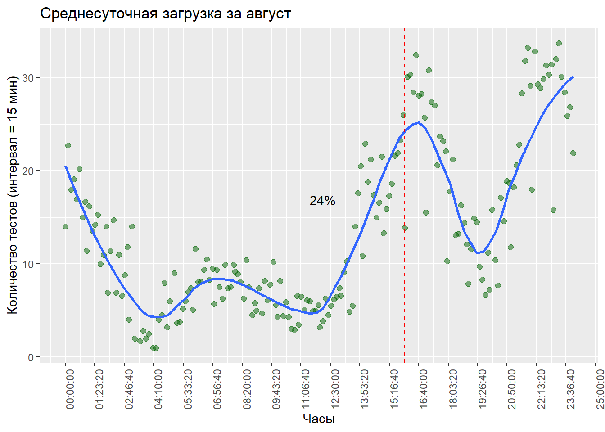
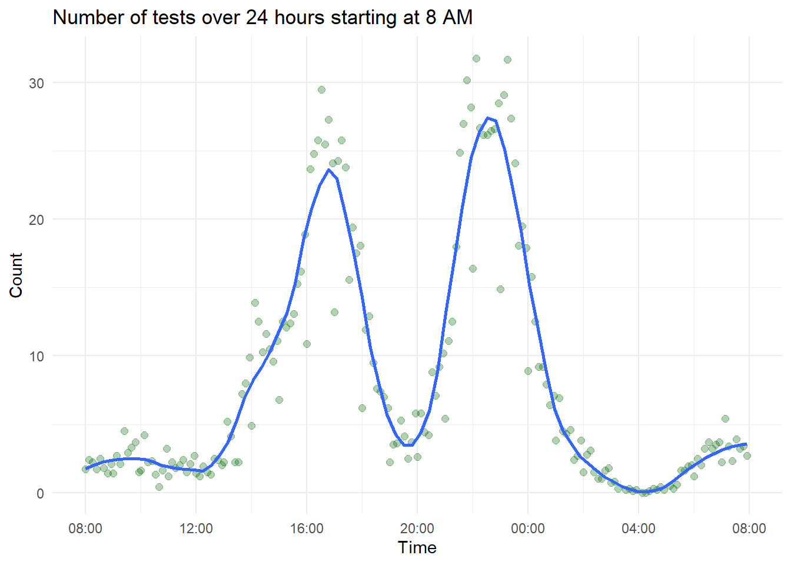
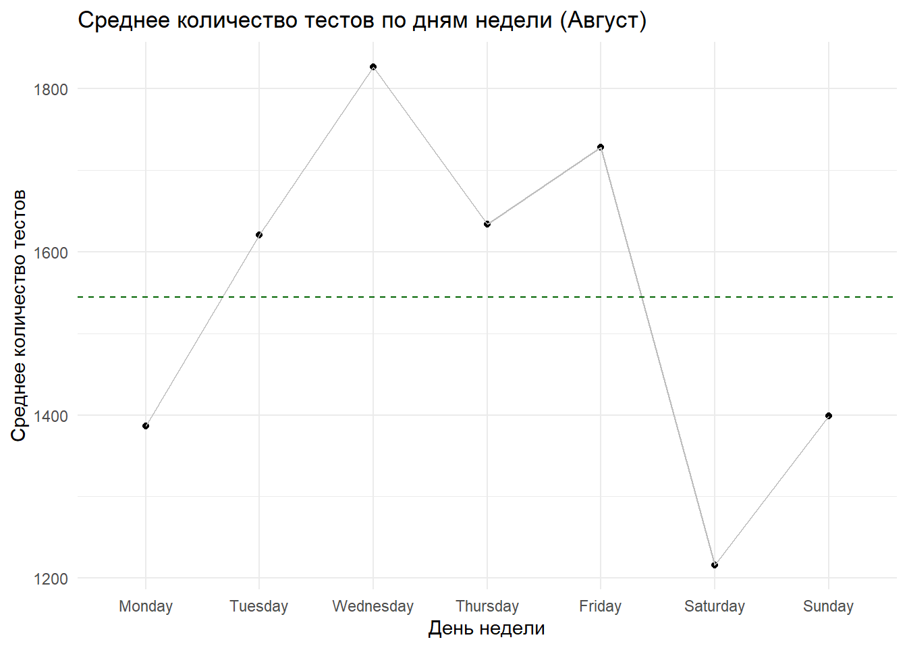

library(tidyverse)
library (data.table)
library(readxl)
library(ggthemes)
library(gt)
library(zoo)Mindray BC-6800. August
1. Загрузка необходимых библиотек.
2. Загрузка таблиц с данными.
august <- read_excel("C:/Users/user/Desktop/DB/3. CAL8000/Hematology/august.xlsx")
august# A tibble: 51,262 × 116
id validated_by mode tests_panel date_time sex age units department
<chr> <chr> <chr> <chr> <chr> <chr> <chr> <chr> <chr>
1 100373… Кровь:admin CB CD 01-08-20… NA NA NA NA
2 100373… Кровь:admin CB RET 01-08-20… fema… 24 Лет KPP38
3 100373… Кровь:admin CB RET 01-08-20… fema… 28 Лет KPP09
4 100373… Кровь:admin CB RET 01-08-20… fema… 40 Лет KPP75
5 100373… Кровь:admin CB CDR 01-08-20… fema… 39 Лет KDCzM
6 100373… Кровь:admin CB RET 01-08-20… fema… 39 Лет KPP08
7 100373… Кровь:admin CB CDR 01-08-20… male 28 Лет KPP76
8 100373… Кровь:Labor… CB CDR 01-08-20… fema… 18 Меся… KDCzM
9 100373… Кровь:Labor… CB CD 01-08-20… NA NA NA NA
10 100373… Кровь:admin CB CD 01-08-20… NA NA NA NA
# ℹ 51,252 more rows
# ℹ 107 more variables: WBC <chr>, `Neu#` <chr>, `Lym#` <chr>, `Mon#` <chr>,
# `Eos#` <chr>, `Bas#` <chr>, `IMG#` <chr>, `Neu%` <chr>, `Lym%` <chr>,
# `Mon%` <chr>, `Eos%` <chr>, `Bas%` <chr>, `IMG%` <chr>, RBC <chr>,
# HGB <chr>, HCT <chr>, MCV <chr>, MCH <chr>, MCHC <chr>, `RDW-CV` <chr>,
# `RDW-SD` <chr>, PLT <chr>, MPV <chr>, PDW <chr>, PCT <chr>, `P-LCC` <chr>,
# `P-LCR` <chr>, IPF <chr>, `RET#` <chr>, `RET%` <chr>, IRF <chr>, …3. Подготовка, преобразование данных
3.1 Преобразование столбца с датой/временем в формат даты/времени.
При загрузке данных в этом случае формат chr. После преобразования - S3: POSIXct (2023-08-01 00:49:01)
august$date_time <- dmy_hms(august$date_time)
head(august,10)# A tibble: 10 × 116
id validated_by mode tests_panel date_time sex age units
<chr> <chr> <chr> <chr> <dttm> <chr> <chr> <chr>
1 1003734… Кровь:admin CB CD 2023-08-01 00:49:01 NA NA NA
2 1003734… Кровь:admin CB RET 2023-08-01 00:55:07 fema… 24 Лет
3 1003732… Кровь:admin CB RET 2023-08-01 00:55:37 fema… 28 Лет
4 1003733… Кровь:admin CB RET 2023-08-01 00:56:06 fema… 40 Лет
5 1003731… Кровь:admin CB CDR 2023-08-01 01:04:08 fema… 39 Лет
6 1003734… Кровь:admin CB RET 2023-08-01 01:04:37 fema… 39 Лет
7 1003730… Кровь:admin CB CDR 2023-08-01 01:05:09 male 28 Лет
8 1003734… Кровь:Labor… CB CDR 2023-08-01 01:05:37 fema… 18 Меся…
9 1003736… Кровь:Labor… CB CD 2023-08-01 01:48:47 NA NA NA
10 1003736… Кровь:admin CB CD 2023-08-01 01:49:20 NA NA NA
# ℹ 108 more variables: department <chr>, WBC <chr>, `Neu#` <chr>,
# `Lym#` <chr>, `Mon#` <chr>, `Eos#` <chr>, `Bas#` <chr>, `IMG#` <chr>,
# `Neu%` <chr>, `Lym%` <chr>, `Mon%` <chr>, `Eos%` <chr>, `Bas%` <chr>,
# `IMG%` <chr>, RBC <chr>, HGB <chr>, HCT <chr>, MCV <chr>, MCH <chr>,
# MCHC <chr>, `RDW-CV` <chr>, `RDW-SD` <chr>, PLT <chr>, MPV <chr>,
# PDW <chr>, PCT <chr>, `P-LCC` <chr>, `P-LCR` <chr>, IPF <chr>,
# `RET#` <chr>, `RET%` <chr>, IRF <chr>, LFR <chr>, MFR <chr>, HFR <chr>, …3.2 Создание отдельных столбцов: time, date. Перемещение столбцов в удобное место расположения.
august <- august |>
mutate(time = format(date_time, "%H:%M:%S"),
date = format(date_time, "%Y-%m-%d")) |>
relocate(time, .after = date_time) |>
relocate(date, .after = time) |>
select(id, mode, tests_panel, date_time, date, time,sex, age, units, department)
head(august, 5)# A tibble: 5 × 10
id mode tests_panel date_time date time sex age units
<chr> <chr> <chr> <dttm> <chr> <chr> <chr> <chr> <chr>
1 100373468… CB CD 2023-08-01 00:49:01 2023… 00:4… NA NA NA
2 100373474… CB RET 2023-08-01 00:55:07 2023… 00:5… fema… 24 Лет
3 100373202… CB RET 2023-08-01 00:55:37 2023… 00:5… fema… 28 Лет
4 100373337… CB RET 2023-08-01 00:56:06 2023… 00:5… fema… 40 Лет
5 100373178… CB CDR 2023-08-01 01:04:08 2023… 01:0… fema… 39 Лет
# ℹ 1 more variable: department <chr>3.3 Округление столбца time (chr) до 8 минут и добавление столбца rounded_time.
В дальнейшем это даст возможность сгруппировать данные для оценки пиковой нагрузки.
august <- august |>
mutate(rounded_time = format(round_date(date_time, unit = "8 minutes"), "%H:%M:%S")) |>
relocate(rounded_time, .after = time) |>
mutate(num = 1) |>
relocate(num, .before = id)
head(august, 5)# A tibble: 5 × 12
num id mode tests_panel date_time date time rounded_time
<dbl> <chr> <chr> <chr> <dttm> <chr> <chr> <chr>
1 1 10037346… CB CD 2023-08-01 00:49:01 2023… 00:4… 00:48:00
2 1 10037347… CB RET 2023-08-01 00:55:07 2023… 00:5… 00:56:00
3 1 10037320… CB RET 2023-08-01 00:55:37 2023… 00:5… 00:56:00
4 1 10037333… CB RET 2023-08-01 00:56:06 2023… 00:5… 00:56:00
5 1 10037317… CB CDR 2023-08-01 01:04:08 2023… 01:0… 01:08:00
# ℹ 4 more variables: sex <chr>, age <chr>, units <chr>, department <chr>4. Построение графиков, оценка результатов.
4.1 Группировка по дате (для подсчета количества тестов в день)
Добавление столбца день недели
Преобразование date из chr в date
создание date_num с номером дня (0-30)
# общее количество тестов в день (август)
august_total <- august |>
group_by(date) |>
summarise(count = n()) |>
filter(date < '2023-09-01')
august_total$date_ymd <- ymd(august_total$date)
august_total$date_num <- as.numeric(difftime(august_total$date, min(august_total$date), units = "days"))
august_total <- august_total |>
mutate(day_of_week = weekdays(date_ymd, abbreviate = TRUE)) |>
relocate(day_of_week, .before = date)
august_total# A tibble: 31 × 5
day_of_week date count date_ymd date_num
<chr> <chr> <int> <date> <dbl>
1 Tue 2023-08-01 1616 2023-08-01 0
2 Wed 2023-08-02 1445 2023-08-02 1
3 Thu 2023-08-03 1152 2023-08-03 2
4 Fri 2023-08-04 2003 2023-08-04 3
5 Sat 2023-08-05 1445 2023-08-05 4
6 Sun 2023-08-06 1098 2023-08-06 5
7 Mon 2023-08-07 1276 2023-08-07 6
8 Tue 2023-08-08 1555 2023-08-08 7
9 Wed 2023-08-09 1747 2023-08-09 8
10 Thu 2023-08-10 1661 2023-08-10 9
# ℹ 21 more rows4.2 Создание точечного графика : “Среднее количество тестов в день (Август)”
mean_total <- round(mean(august_total$count),1)
august_total |> ggplot(aes(x = date, y = count))+
geom_point(size = 3, col = "darkgreen", alpha = 0.5)+
geom_smooth(aes(x = date, y = count, group = 1), method = "lm", se = FALSE, col = "darkgray", linetype = "dashed")+
geom_hline(yintercept = mean_total, linetype = "dotted", linewidth = 1) +
annotate("text", x = min(august_total$date), y = mean_total + 100, label = round(mean_total, 1), hjust = 0) +
theme_minimal() +
theme(axis.text.x = element_text(angle = 45, hjust = 1))+
ggtitle("Среднее количество тестов в день (Август)")+
xlab("Дата")+
ylab("Количество исследований")
Чтобы добавить формулу линейной регрессии и подсчитать прирост за месяц (наклон линии), вы можете использовать функции из пакета lm (линейная модель) и ggplot2.
4.2.1 Расчет прироста за месяц:
- Сначала вы можете создать линейную модель с
lm()дляcountпоdate. Затем извлечь коэффициенты модели, чтобы определить прирост за день. Умножение этого значения на 30 : даст приблизительный прирост за месяц.
# Создаем линейную модель
model <- lm(count ~ date_num, data = august_total)
# Получаем коэффициенты
coef_vals <- coef(model)
# Прирост за день
daily_growth <- coef_vals["date_num"]
daily_growthdate_num
10.74718 # Прирост за месяц
monthly_growth <- daily_growth * 30
monthly_growthdate_num
322.4153 4.2.2 Добавить формулу на график:
Вы можете использовать annotate() для добавления формулы на график.
library(ggplot2)
formula_text <- paste0("y = ", round(coef_vals[1], 2), " + ", round(daily_growth, 2), "x")
august_total |>
ggplot(aes(x = date, y = count)) +
geom_point(size = 3, col = "darkgreen", alpha = 0.5) +
geom_hline(yintercept = mean_total, linetype = "dotted", size= 1) +
annotate("text", x = min(august_total$date), y = mean_total + 100, label = round(mean_total, 1), hjust = 0)+
geom_smooth(aes(x = date, y = count, group = 1), method = "lm", se = FALSE, col = "darkgray", linetype = "dashed") +
annotate("text", x = min(august_total$date), y = max(august_total$count), label = formula_text, hjust = 0, col = "darkgray") +
theme_minimal() +
theme(axis.text.x = element_text(angle = 45, hjust = 1))+
ggtitle("Среднее количество тестов в день (Август)")+
xlab("Дата")+
ylab("Количество исследований")Warning: Using `size` aesthetic for lines was deprecated in ggplot2 3.4.0.
ℹ Please use `linewidth` instead.
4.2.3 Процентный прирост
Чтобы вычислить процентное изменение или прирост в процентах за месяц на основе вашей линейной модели, выполните следующие шаги:
1. Определите начальное и конечное значения на основе вашей линейной модели:
Используйте линейную модель, чтобы предсказать начальное значение (на начало месяца) и конечное значение (на конец месяца).
predicted_start <- coef_vals[1] + coef_vals["date_num"] * min(august_total$date_num)
predicted_end <- coef_vals[1] + coef_vals["date_num"] * max(august_total$date_num)2. Вычислите процентное изменение:
Процентное изменение можно вычислить с помощью следующей формулы:
\[ Процентное \ изменение=\frac{(Начальное \ значение - Конечное \ значение)}{Начальное \ значение} ×100 \]
percent_growth <- ((predicted_end - predicted_start) / predicted_start) * 100
percent_growth(Intercept)
22.52795 Теперь переменная percent_growth содержит прирост в процентах за месяц на основе вашей линейной модели.
Если вам интересен среднемесячный процентный прирост, учитывая начальное значение каждого дня и предсказанное значение на следующий день, этот процесс будет сложнее и потребует дополнительных вычислений. Но приведенный выше метод предоставляет общую оценку процентного изменения на основе линейной модели для всего месяца.
3. Среднемесячный процентный прирост, учитывая начальное значение каждого дня и предсказанное значение на следующий день
Для вычисления среднемесячного процентного прироста, учитывая начальное значение каждого дня и предсказанное значение на следующий день, вам понадобится выполнить следующие шаги:
Вычислить процентное изменение для каждой пары дней (день N и день N+1).
Найти среднее значение этих процентных изменений.
Давайте приступим к реализации:
- Создайте новый столбец в вашем фрейме данных, который представляет собой смещенное значение столбца
count, чтобы можно было легко вычислить процентное изменение:
august_total$next_day_count <- dplyr::lead(august_total$count, 1)
august_total$next_day_count [1] 1445 1152 2003 1445 1098 1276 1555 1747 1661 1499 1569 1233 1465 1598 1761
[16] 1827 1695 1534 1354 1422 1587 1904 2050 1549 1529 1909 1383 1744 2276 1478
[31] NA- Вычислите процентное изменение для каждой пары дней:
august_total$percent_change <- ((august_total$next_day_count - august_total$count) / august_total$count) * 100
august_total$percent_change [1] -10.581683 -20.276817 73.871528 -27.858213 -24.013841 16.211293
[7] 21.865204 12.347267 -4.922725 -9.753161 4.669780 -21.414914
[13] 18.815896 9.078498 10.200250 3.747871 -7.224959 -9.498525
[19] -11.734029 5.022157 11.603376 19.974795 7.668067 -24.439024
[25] -1.291156 24.852845 -27.553693 26.102675 30.504587 -35.061511
[31] NAВычислите среднее процентное изменение:
average_percent_change <- round(mean(august_total$percent_change, na.rm = TRUE),2)
average_percent_change[1] 2.03Теперь average_percent_change содержит среднее процентное изменение от дня к дню на протяжении всего месяца.
Обратите внимание, что последнее значение в столбце percent_change будет NA, так как для последнего дня нет следующего дня для сравнения. Это также учитывается при вычислении среднего значения с помощью аргумента na.rm = TRUE.
4.2.4 Скользящее среднее
Скользящее среднее, иногда называемое “перемещающимся средним”, вычисляет среднее значение для определенного числа последних наблюдений. Это используется для сглаживания временных рядов и исключения короткосрочных флуктуаций или шума из данных.
В R и tidyverse вы можете вычислить скользящее среднее с помощью функции rollmean из пакета zoo или функции slide из пакета slider.
Вот пример использования rollmean для вычисления 7-дневного скользящего среднего для вашего набора данных:
library(tidyverse)
library(zoo)
august_total <- august_total %>%
arrange(date) %>%
mutate(rolling_mean = rollmean(count, 4, fill = NA, align = "center")) |>
relocate(rolling_mean, .before = count)
august_total# A tibble: 31 × 8
day_of_week date rolling_mean count date_ymd date_num next_day_count
<chr> <chr> <dbl> <int> <date> <dbl> <int>
1 Tue 2023-08-01 NA 1616 2023-08-01 0 1445
2 Wed 2023-08-02 1554 1445 2023-08-02 1 1152
3 Thu 2023-08-03 1511. 1152 2023-08-03 2 2003
4 Fri 2023-08-04 1424. 2003 2023-08-04 3 1445
5 Sat 2023-08-05 1456. 1445 2023-08-05 4 1098
6 Sun 2023-08-06 1344. 1098 2023-08-06 5 1276
7 Mon 2023-08-07 1419 1276 2023-08-07 6 1555
8 Tue 2023-08-08 1560. 1555 2023-08-08 7 1747
9 Wed 2023-08-09 1616. 1747 2023-08-09 8 1661
10 Thu 2023-08-10 1619 1661 2023-08-10 9 1499
# ℹ 21 more rows
# ℹ 1 more variable: percent_change <dbl>Теперь вы можете добавить это скользящее среднее к вашему графику:
august_total %>%
ggplot(aes(x = date, y = count)) +
geom_point(size = 3, col = "darkgreen", alpha = 0.5) +
geom_line(aes(y = rolling_mean), col = "darkblue", na.rm = TRUE, group = 1) +
geom_smooth(aes(x = date, y = count, group = 1), method = "lm", se = FALSE, col = "darkgray", linetype = "dashed") +
annotate("text", x = min(august_total$date), y = max(august_total$count), label = formula_text, hjust = 0, col = "darkgray") +
annotate("text", x = max(august_total$date), y = min(august_total$count), label = paste0("Среднее процентное изменение: ", round(average_percent_change, 2), "%"), hjust = 1)+
theme_minimal() +
theme(axis.text.x = element_text(angle = 45, hjust = 1)) +
ggtitle("Среднее количество тестов в день (Август)") +
xlab("Дата") +
ylab("Количество исследований")`geom_smooth()` using formula = 'y ~ x'
4.3 Расчет почасовой загрузки
head(august,5)# A tibble: 5 × 12
num id mode tests_panel date_time date time rounded_time
<dbl> <chr> <chr> <chr> <dttm> <chr> <chr> <chr>
1 1 10037346… CB CD 2023-08-01 00:49:01 2023… 00:4… 00:48:00
2 1 10037347… CB RET 2023-08-01 00:55:07 2023… 00:5… 00:56:00
3 1 10037320… CB RET 2023-08-01 00:55:37 2023… 00:5… 00:56:00
4 1 10037333… CB RET 2023-08-01 00:56:06 2023… 00:5… 00:56:00
5 1 10037317… CB CDR 2023-08-01 01:04:08 2023… 01:0… 01:08:00
# ℹ 4 more variables: sex <chr>, age <chr>, units <chr>, department <chr>- Создание
august_time
august_time <- august |>
group_by(rounded_time, date) |>
summarise(count_per_day = n()) |>
group_by(rounded_time) |>
summarise(average_count = round(mean(count_per_day),1))
august_time$rounded_time <- hms(august_time$rounded_time)
august_time# A tibble: 189 × 2
rounded_time average_count
<Period> <dbl>
1 0S 14
2 8M 0S 22.7
3 16M 0S 18
4 24M 0S 19.1
5 32M 0S 16.9
6 40M 0S 20.2
7 48M 0S 15
8 56M 0S 16.7
9 1H 0M 0S 11.4
10 1H 8M 0S 16.2
# ℹ 179 more rows4.3.1 Skatterplot : “00:00 - 23:59”
median_time <- median(period_to_seconds(august_time$rounded_time))
august_time |> ggplot(aes(x = rounded_time, y = average_count)) +
geom_point(size = 2, color = "darkgreen", alpha = 0.5) +
scale_x_time(breaks = scales::pretty_breaks(n = 24)) +
geom_smooth(method = "loess", se = FALSE,span = 0.3 ) +
geom_vline(xintercept = as.numeric(lubridate::hours(16)), linetype = "dashed", color = "red")+
geom_vline(xintercept = as.numeric(lubridate::hours(8)), linetype = "dashed", color = "red")+
annotate("text", x = seconds_to_period(median_time), y = max(august_time$average_count)/2, label = "24%", hjust = 0.5) +
theme(axis.text.x = element_text(angle = 90, hjust = 1))+
ggtitle("Среднесуточная загрузка за август")+
xlab("Часы")+
ylab("Количество тестов (интервал = 15 мин)")`geom_smooth()` using formula = 'y ~ x'
4.3.2 Процент исследований с 16:00 до 08:00
plan <- august_time |>
filter(rounded_time >= hours(8) & rounded_time<=hours(16)) |>
summarise(plan = sum(average_count))
duty <- august_time |>
filter(rounded_time < hours(8) | rounded_time>hours(16)) |>
summarise(duty = sum(average_count))
round(duty$duty/(duty$duty+plan$plan)*100,0)[1] 754.3.3 Skatterplot : “08:00 - 08:00 следущего дня”
august$date <- ymd(august$date)
august$time <- hms(august$rounded_time)
august_analyzed_24h <- august |>
mutate(time = hms::hms(time)) |>
relocate(date, time, .before = num) |>
group_by(date) |>
arrange(date,time) |>
select(date, time)
august_analyzed_24h <- august_analyzed_24h |>
group_by(time) |>
summarise (count = n()/33)
august_analyzed_24h$count <- round(august_analyzed_24h$count, 1)
august_analyzed_24h# A tibble: 189 × 2
time count
<time> <dbl>
1 00:00 8.9
2 00:08 15.8
3 00:16 12.5
4 00:24 9.2
5 00:32 9.2
6 00:40 7.9
7 00:48 6.4
8 00:56 7.1
9 01:00 3.8
10 01:08 6.9
# ℹ 179 more rows# Переводим время в POSIXct, чтобы можно было выполнить смещение
base_date <- as.Date("2023-10-24")
august_analyzed_24h <- august_analyzed_24h %>%
mutate(datetime = as.POSIXct(paste(base_date, time), format = "%Y-%m-%d %H:%M:%S", tz = "UTC")) %>%
mutate(shifted_datetime = if_else(datetime < as.POSIXct("2023-10-24 08:00:00", tz="UTC"), datetime + days(1), datetime))
limits <- as.POSIXct(c("2023-10-24 08:00:00", "2023-10-25 08:00:00"), tz = "UTC")
breaks <- as.POSIXct(c("2023-10-24 08:00:00", "2023-10-24 12:00:00", "2023-10-24 16:00:00", "2023-10-24 20:00:00", "2023-10-25 00:00:00", "2023-10-25 04:00:00", "2023-10-25 08:00:00"), tz = "UTC")
ggplot(august_analyzed_24h, aes(x = shifted_datetime, y = count)) +
geom_point(size = 2, color = "darkgreen", alpha = 0.3) +
scale_x_datetime(limits = limits, breaks = breaks, labels = scales::time_format("%H:%M")) +
labs(x = "Time", y = "Count", title = "Number of tests over 24 hours starting at 8 AM")+
theme_minimal()+
geom_smooth(se = FALSE, span = 0.2, alpha = 0.2)`geom_smooth()` using method = 'loess' and formula = 'y ~ x'
4.3.4 Загрузка по дням недели
1. Создаем столбец с днями недели : weekday и стобец с номером недели : week_num. (используется lubridate)
library(lubridate)
# Извлекаем числовое значение дня недели с помощью wday()
august$wday_num <- wday(august$date_time)
# Преобразуем числовые значения в имена дней недели
august$weekday <- weekdays(as.Date(august$date_time))
# Перемещаем столбец 'weekday' перед столбцом 'id'
august <- august |> relocate(weekday, .before = id)
# Создаем столбец с номером недели (в году)
august$week_num <- week(august$date)
august <- august |> relocate(week_num, .before = weekday)
august# A tibble: 51,262 × 15
num week_num weekday id mode tests_panel date_time date
<dbl> <int> <chr> <chr> <chr> <chr> <dttm> <date>
1 1 31 Tuesday 1003… CB CD 2023-08-01 00:49:01 2023-08-01
2 1 31 Tuesday 1003… CB RET 2023-08-01 00:55:07 2023-08-01
3 1 31 Tuesday 1003… CB RET 2023-08-01 00:55:37 2023-08-01
4 1 31 Tuesday 1003… CB RET 2023-08-01 00:56:06 2023-08-01
5 1 31 Tuesday 1003… CB CDR 2023-08-01 01:04:08 2023-08-01
6 1 31 Tuesday 1003… CB RET 2023-08-01 01:04:37 2023-08-01
7 1 31 Tuesday 1003… CB CDR 2023-08-01 01:05:09 2023-08-01
8 1 31 Tuesday 1003… CB CDR 2023-08-01 01:05:37 2023-08-01
9 1 31 Tuesday 1003… CB CD 2023-08-01 01:48:47 2023-08-01
10 1 31 Tuesday 1003… CB CD 2023-08-01 01:49:20 2023-08-01
# ℹ 51,252 more rows
# ℹ 7 more variables: time <Period>, rounded_time <chr>, sex <chr>, age <chr>,
# units <chr>, department <chr>, wday_num <int>2. Выполняем группировку по дню недели для построения графика
avg_tests_per_weekday <- august |>
group_by(date, weekday) |>
summarise(daily_tests = n()) |>
group_by(weekday) |>
summarise(avg_tests = mean(daily_tests))
avg_tests_per_weekday# A tibble: 7 × 2
weekday avg_tests
<chr> <dbl>
1 Friday 1728.
2 Monday 1386.
3 Saturday 1216.
4 Sunday 1398.
5 Thursday 1634.
6 Tuesday 1620
7 Wednesday 1827.3. Построение графика начиная с понедельника
Чтобы гарантировать, что график начинается с понедельника, нужно сначала преобразовать вашу переменную weekday в упорядоченный фактор с правильной последовательностью дней. Затем вы можете использовать эту упорядоченную переменную для построения графика.
Вот как вы можете сделать это:
# Преобразование 'weekday' в упорядоченный фактор
ordered_days <- c("Monday", "Tuesday", "Wednesday", "Thursday", "Friday", "Saturday", "Sunday")
avg_tests_per_weekday$weekday <- factor(avg_tests_per_weekday$weekday, levels = ordered_days, ordered = TRUE)
mean_wd <- round(mean(avg_tests_per_weekday$avg_tests),2)
# Теперь вы можете построить график
library(ggplot2)
ggplot(avg_tests_per_weekday, aes(x=weekday, y=avg_tests)) +
geom_point() +
geom_line(group=1, col = "gray") +
labs(title="Среднее количество тестов по дням недели (Август)", x="День недели", y="Среднее количество тестов")+
theme_minimal()+
geom_hline(yintercept = mean_wd, linetype = "dashed", color = "darkgreen")
В ggplot2, параметр group используется для определения, какие точки следует соединить линиями в случае, если несколько наблюдений имеют одно и то же значение по оси X.
В вашем коде у вас есть график, который показывает среднее количество тестов по дням недели. Поскольку каждый день недели уникален, вам не нужно было бы использовать параметр group для соединения точек в определенной последовательности. Однако, по умолчанию, geom_line() пытается группировать линии на основе другой переменной. Указав group=1, вы фактически говорите ggplot2: “Считай все эти точки одной группой и соедини их линией”.
В общем, group=1 здесь служит инструкцией для geom_line() обрабатывать все данные как одну группу и соединять их последовательно на основе порядка дней недели. Если бы вы убрали group=1, то geom_line() не знал бы, как соединять точки, и вы бы не увидели линию на вашем графике.